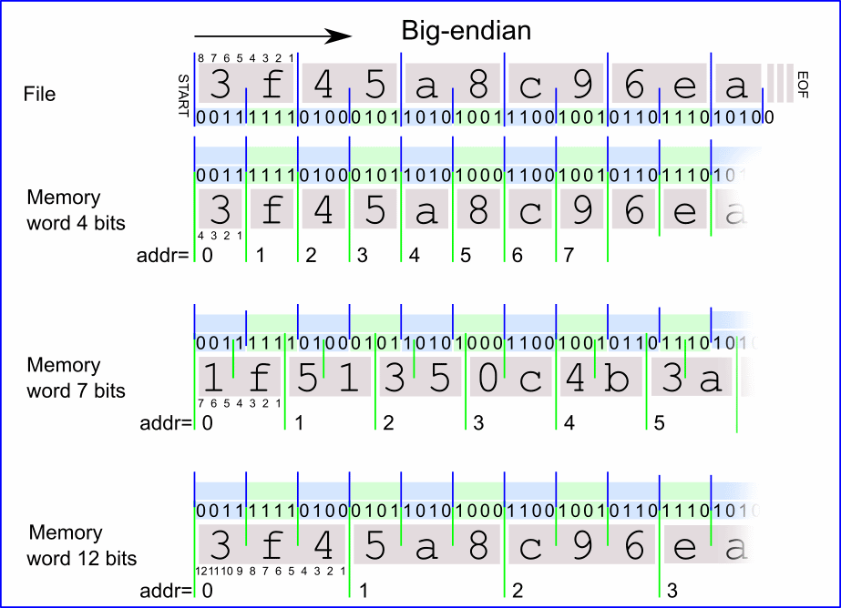
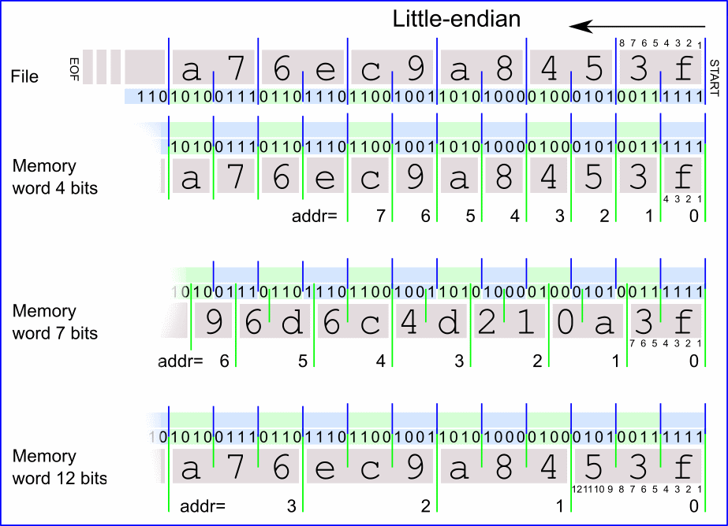
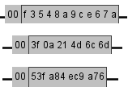
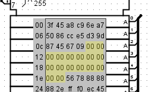

Формат v3.0 hex bytes plain big-endian
Этот формат представляет данные в виде сплошного потока байт.
Пример структуры файла
v3.0 hex bytes plain big-endian 3f45a8c96ea00042f261613443f8b2cb 50950e0604427da5a9641e91526c7970 a7eb2d655343913e6b7d39db17730c77 058ea8ae931cbe211d218d412c76a495
Правила и синтаксис
- Заголовок: Первая строка строго задаёт тип формата (v3.0 hex bytes plain big-endian).
- Данные: Записываются в ASCII-кодировке шестнадцатеричными символами (строго по две цифры на каждый байт).
- Форматирование: Пробелы и символы перевода строки не интерпретируются и используются только для удобства чтения. Префикс 0x перед числами не требуется (если он присутствует, парсер его проигнорирует).
- Комментарии: Поддерживаются комментарии. Все символы в строке, идущие после символа решётки (#), игнорируются.
- Недостаток данных: Если объём данных в файле меньше объёма памяти компонента, оставшиеся ячейки инициализируются нулями (для ПЗУ) или нулями/случайными значениями (для ОЗУ) согласно настройкам проекта на вкладке | Опции проекта |.

В режиме big-endian (от старшего к младшему) память заполняется как последовательный поток байт, независимо от разрядности слов компонента: старшие байты располагаются слева, младшие — справа. На иллюстрации выше показано, как байты из файла (сверху) последовательно укладываются в память с разрядностью слова 4, 7 и 12 бит. Примечание: обратите внимание на смещение битов для слов, разрядность которых не кратна 8 (например, 7-битных).
Формат v3.0 hex bytes plain little-endian
Формат полностью идентичен предыдущему по синтаксису, но отличается порядком байт. В режиме little-endian (от младшего к старшему) байты записываются справа налево.
v3.0 hex bytes plain little-endian 3f45a8c96ea00042f261613443f8b2cb 50950e0604427da5a9641e91526c7970 a7eb2d655343913e6b7d39db17730c77 058ea8ae931cbe211d218d412c76a495

Здесь младшие байты занимают правые (младшие) позиции в словах памяти, а старшие следуют за ними. На иллюстрации показано заполнение для 4-, 7- и 12-битных слов.

Выше приведены те же примеры, отображаемые непосредственно на корпусе компонента памяти в Logisim.
Формат v3.0 hex bytes addressed big-endian
Этот формат базируется на правилах plain big-endian, но добавляет возможность явной адресации. Это позволяет точно позиционировать блоки данных, пропуская пустые участки памяти. Адрес записывается в шестнадцатеричном виде, после чего ставится двоеточие (:).
v3.0 hex bytes addressed big-endian 00: 3f45a8c96ea75086cce5d39d87456709 20: 56788888882efff0ec45670900000000 30: 9863fec8a2d75d342e1f008090445578
В этом примере пропущен блок данных по адресу 0x10 (8 слов). Эти пропущенные ячейки будут заполнены нулями (или случайными значениями для ОЗУ), как описано ранее.

Формат v3.0 hex bytes addressed little-endian
Синтаксис идентичен формату addressed big-endian (поддерживает явные адреса с двоеточием), но данные внутри слов распределяются в порядке little-endian (младшим байтом вперёд).
v3.0 hex bytes addressed little-endian 00: 3f45a8c96ea75086cce5d39d87456709 20: 56788888882efff0ec45670900000000 30: 9863fec8a2d75d342e1f008090445578
Далее: Контекстное меню и файлы.